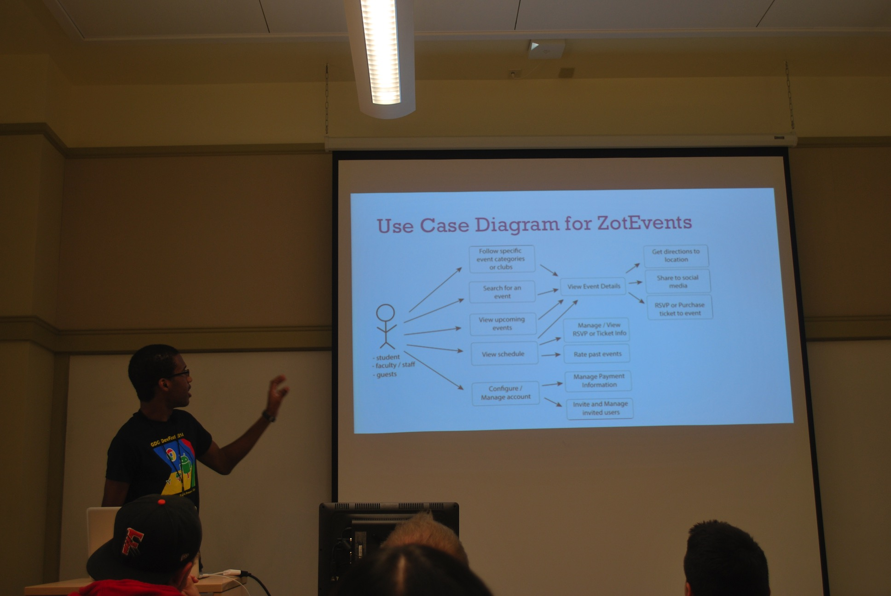

When I say story, I'm referring to the concept that is described in the following book: The User’s Journey: Storymapping Products that People Love. With this project, I am using “story” to refine and expand the design of a mobile app concept that I originally spoke about when I gave an Android Design talk in 2014.
Fresno Transit Free is a mobile bus schedule for Android and iOS that improves the experience of Fresno Area Express bus riders. This project is what got me into user experience and user interface design.
This was my first experience using a user-centered design process. I was tasked with designing a solution within the area of productivity and efficiency.
This was the second design project for my Software Design I class at UC Irvine. With the use of various software design methods, we were tasked with designing a traffic flow simulation program.
This was my first foray into designing a professional website. While I was a member of ScholarDev LLC, I would lead efforts to design our business’ website.
For this challenge, I was tasked with designing two screens for a fictional iOS app that could trigger lucid dreams.
This entry includes the most notable branding and marketing materials that I created for this project.
This entry includes the most notable business-specific branding and marketing materials that I created while being a member of ScholarDev LLC.
This was the final project of my Adobe Illustrator community college class. We were tasked with designing the look of the items that encompass a physical CD album. Since I was a fan of it at the time, I decided to design the album for Super Hexagon, which is an arcade game that has been released on various platforms.
© Joshwin Greene 2017